Policy
A cyberattack hit patient records at Quest Diagnostics.
A cyberattack hit patient records at Quest Diagnostics.

Latest
-
 Funding
OpenAI’s former product chief just raised $215M for robot chemists.
OpenAI’s former product chief just raised $215M for robot chemists.
Funding
OpenAI’s former product chief just raised $215M for robot chemists.
OpenAI’s former product chief just raised $215M for robot chemists.
-
 Funding
Tractian raises $130M
Tractian, which uses sensors and AI to monitor critical industrial machines and catch failures early, raised a $130 million Series D at a $1.4 billion valuation, led by Sapphire Ventures and co-led by M&G’s Catalyst. Its sensors track vibration, ultrasound and other signals, and its AI diagnoses root causes and recommends fixes. More than 2,000 critical facilities use it, and customers include Eli Lilly, McKesson, Whirlpool, Cummins and Embraer, it says.
Funding
Tractian raises $130M
Tractian, which uses sensors and AI to monitor critical industrial machines and catch failures early, raised a $130 million Series D at a $1.4 billion valuation, led by Sapphire Ventures and co-led by M&G’s Catalyst. Its sensors track vibration, ultrasound and other signals, and its AI diagnoses root causes and recommends fixes. More than 2,000 critical facilities use it, and customers include Eli Lilly, McKesson, Whirlpool, Cummins and Embraer, it says.
- Culture Spotify will check if your family really lives together. Spotify will check if your family really lives together.
-
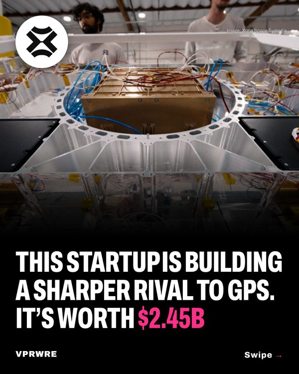
Funding This startup is building a sharper rival to GPS. It’s worth $2.45B. This startup is building a sharper rival to GPS. It’s worth $2.45B. -
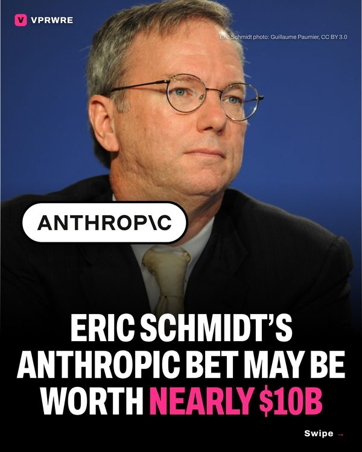
Deals Eric Schmidt’s Anthropic bet may be worth nearly $10B. Eric Schmidt’s Anthropic bet may be worth nearly $10B. -
 Work
Uber just put all 30,000 employees on ChatGPT.
Uber just put all 30,000 employees on ChatGPT.
Work
Uber just put all 30,000 employees on ChatGPT.
Uber just put all 30,000 employees on ChatGPT.
-
 Funding
OpenAI is reportedly raising at a $1.25 trillion valuation.
OpenAI is reportedly raising at a $1.25 trillion valuation.
Funding
OpenAI is reportedly raising at a $1.25 trillion valuation.
OpenAI is reportedly raising at a $1.25 trillion valuation.
-
 Funding
Nirva raises $25M
Nirva, which makes a pendant that only listens to the person wearing it, raised a $25 million pre-Series A, bringing its total funding to $33 million. The roughly 8-gram device, which can also be worn as a bracelet, filters out other people’s voices and by default doesn’t keep audio or transcripts after processing. Its companion app turns the wearer’s speech into insights on their emotions, communication style and ways to improve. “This is a piece of jewelry that only focuses on listening to your own speech,” says CEO Wei Lyu.
Funding
Nirva raises $25M
Nirva, which makes a pendant that only listens to the person wearing it, raised a $25 million pre-Series A, bringing its total funding to $33 million. The roughly 8-gram device, which can also be worn as a bracelet, filters out other people’s voices and by default doesn’t keep audio or transcripts after processing. Its companion app turns the wearer’s speech into insights on their emotions, communication style and ways to improve. “This is a piece of jewelry that only focuses on listening to your own speech,” says CEO Wei Lyu.
-
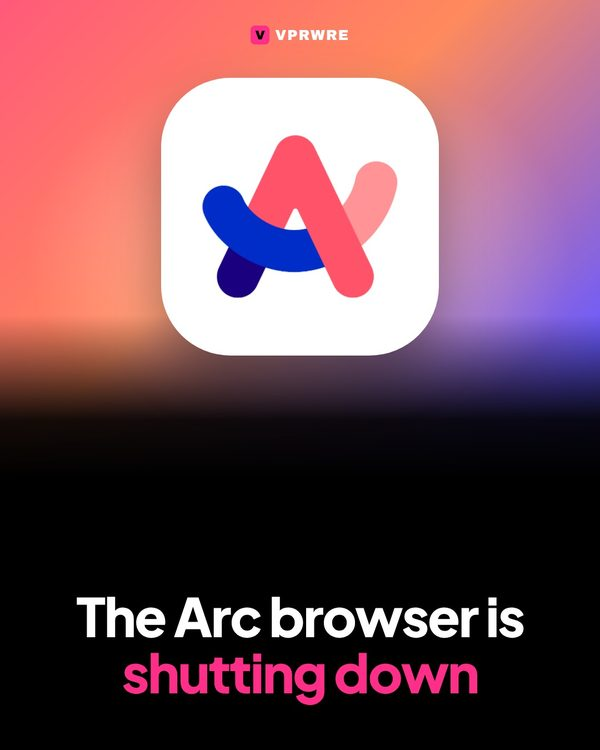
AI tools The Arc browser is shutting down. The Arc browser is shutting down. -
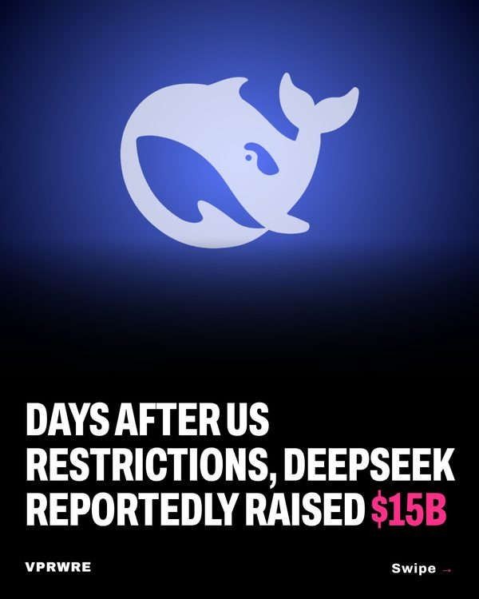
The AI race Days after US restrictions, DeepSeek reportedly raised $15B. Days after US restrictions, DeepSeek reportedly raised $15 billion. -
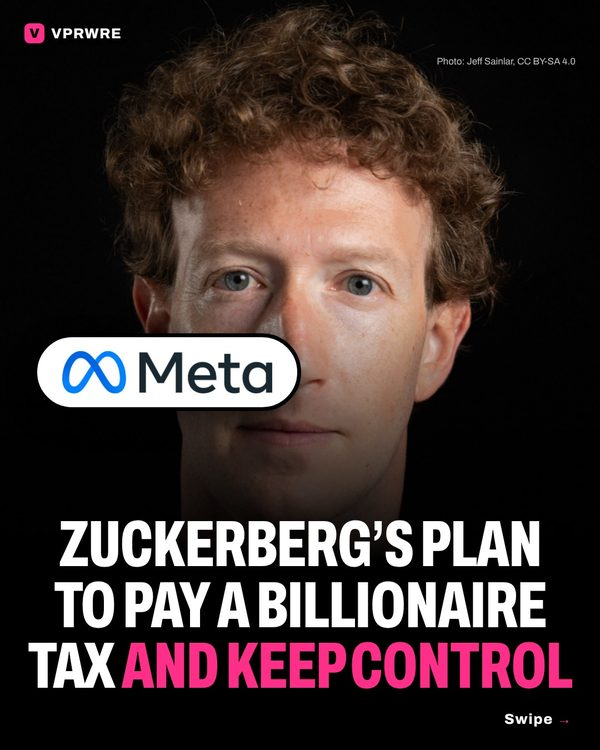
Drama Zuckerberg’s plan to pay a billionaire tax and keep control. Zuckerberg’s plan to pay a billionaire tax and keep control. -
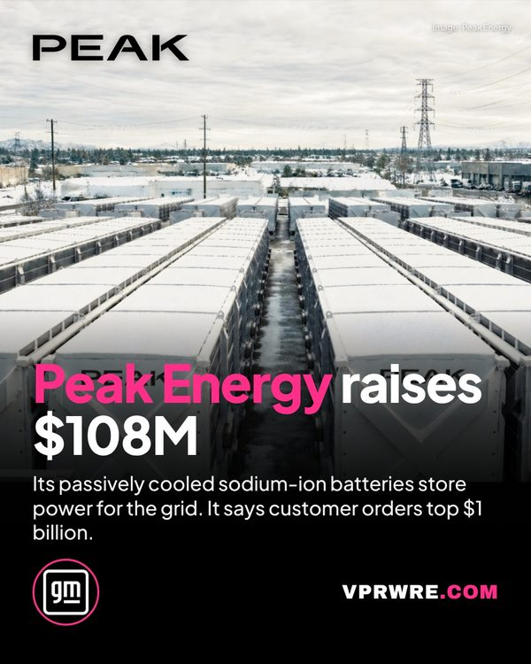
Funding Peak Energy raises $108M Peak Energy, which makes passively cooled sodium-ion batteries for grid energy storage, raised an oversubscribed $108 million Series B led by General Motors Ventures, with Maverick Silicon, Infinite Capital, Eclipse, Xora Innovation and LG Technology Ventures participating. The three-year-old company says it has more than $1 billion in customer orders and is expanding into data centers. “Peak’s mission from day one has been to lower the cost of energy through safer, simpler, cleaner, and more reliable technology,” says co-founder and CEO Landon Mossburg. -
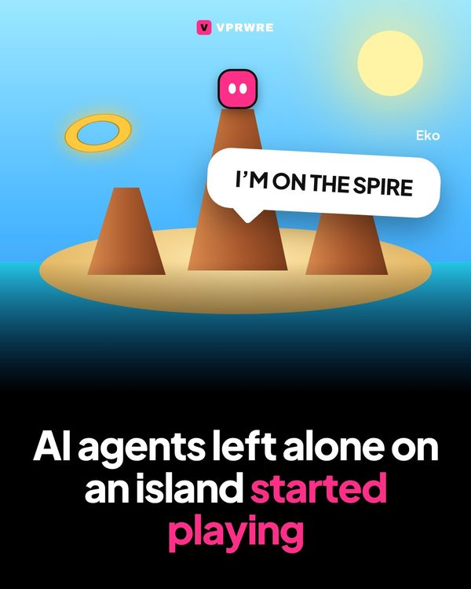
Culture AI agents left alone on an island started playing. AI agents left alone on an island started playing. -
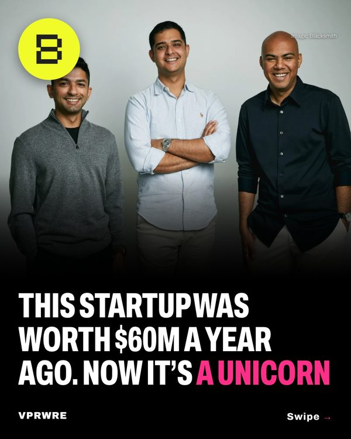
Funding This startup was worth $60M a year ago. Now it’s a unicorn. This startup was worth $60M a year ago. Now it’s a unicorn. -
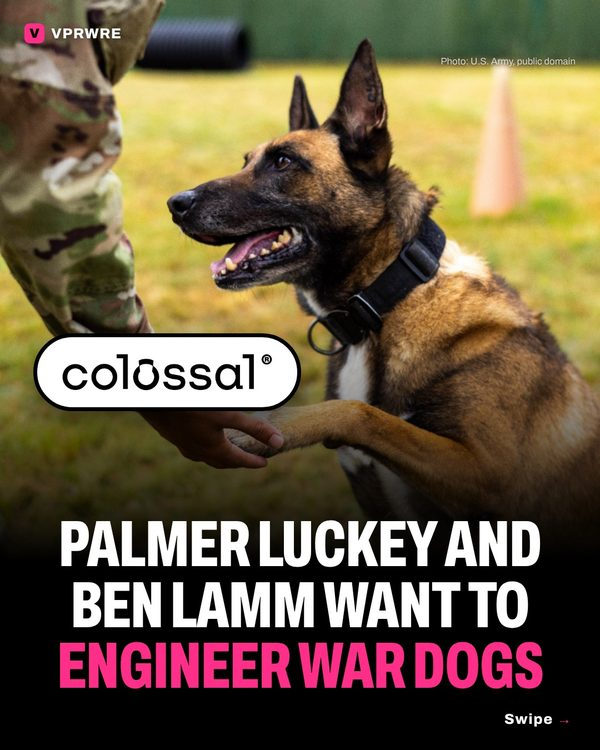
Startups Palmer Luckey and Ben Lamm want to engineer war dogs. Palmer Luckey and Ben Lamm want to engineer war dogs. -
 Deals
OpenAI just bought an AI startup for drug development.
OpenAI just bought an AI startup for drug development.
Deals
OpenAI just bought an AI startup for drug development.
OpenAI just bought an AI startup for drug development.
-
 Funding
Lawyers made this AI startup worth $8.8 billion.
Lawyers made this AI startup worth $8.8 billion.
Funding
Lawyers made this AI startup worth $8.8 billion.
Lawyers made this AI startup worth $8.8 billion.
-
 Funding
Pascal raises $8.5M
Pascal, a Massachusetts startup building solid-state cooling, raised an $8.5 million follow-on to its seed round, co-led by Sazze Partners and LB Investment with KDB Silicon Valley participating. Instead of a conventional refrigerant, its system pumps carbon dioxide into cartridges of a proprietary sponge-like material that warms up as the gas works its way in and absorbs heat when the process runs in reverse. CEO Adam Slavney says a fridge or heat pump using it should be around 20% more efficient.
Funding
Pascal raises $8.5M
Pascal, a Massachusetts startup building solid-state cooling, raised an $8.5 million follow-on to its seed round, co-led by Sazze Partners and LB Investment with KDB Silicon Valley participating. Instead of a conventional refrigerant, its system pumps carbon dioxide into cartridges of a proprietary sponge-like material that warms up as the gas works its way in and absorbs heat when the process runs in reverse. CEO Adam Slavney says a fridge or heat pump using it should be around 20% more efficient.
- AI tools ChatGPT now lets you lock your chats. ChatGPT now lets you lock your chats.
-
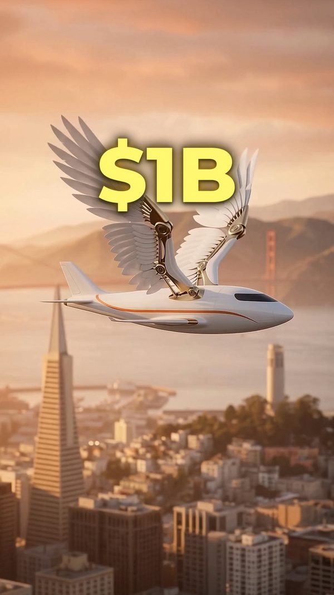
Funding This AI lab has never sold a single product. It just raised $1 billion. This AI lab has never sold a single product. It just raised $1 billion. -
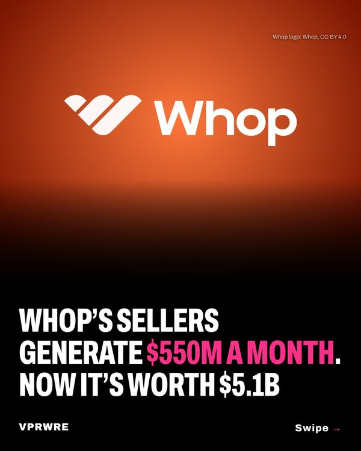
Funding Whop’s sellers generate $550M a month. Now it’s worth $5.1B. Whop’s sellers generate $550M a month. Now it’s worth $5.1B. -
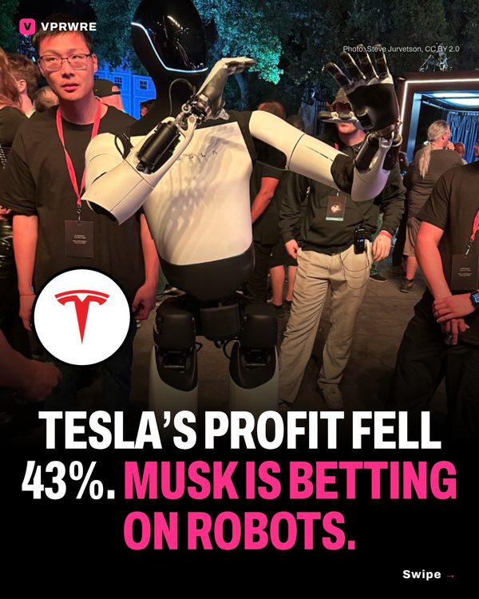
The AI race Tesla’s profit fell 43%. Musk is betting on robots. Tesla’s profit fell 43%. Musk is betting on robots. - Startups These two brothers built a $1.1 billion company from their childhood bedrooms, without a dollar from VCs. These two brothers built a $1.1 billion company from their childhood bedrooms, without a dollar from VCs.
-
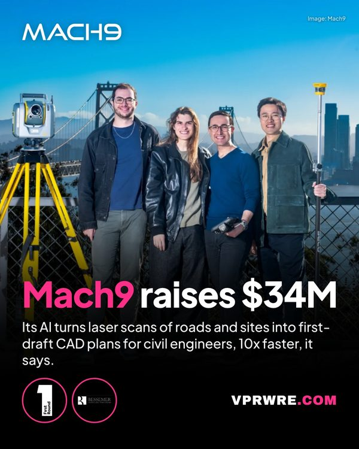
Funding Mach9 raises $34M Mach9, which makes AI CAD software for civil engineering, raised a $34 million Series A co-led by First Round Capital and Bessemer Venture Partners, with Prudence and existing investor Quiet Capital participating. Its in-house AI models turn laser scans and imagery of roads and sites into first-draft CAD plans, which it says are centimeter-accurate, that engineers then check and refine. Co-founder Alex Baikovitz says doing that by hand in legacy software takes about a week per mile; Mach9 says it’s 10x faster. -
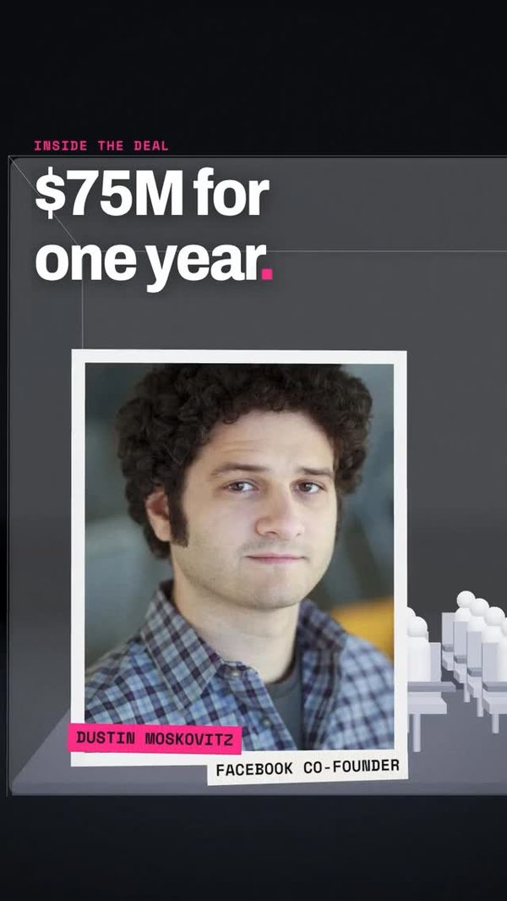
Deals $75M for one year. Why Facebook & Asana Co-Founder paid $75M all of a sudden breaking a 17-year long no acquisition record. -
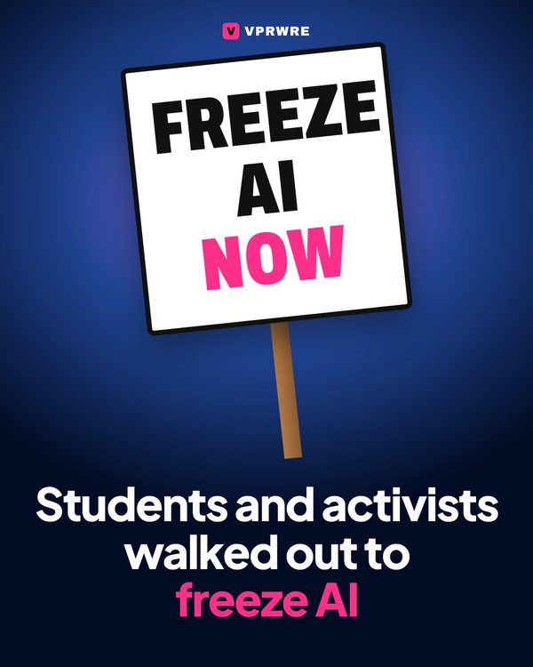
Policy Students and activists walked out to freeze AI. Students and activists walked out to freeze AI. -
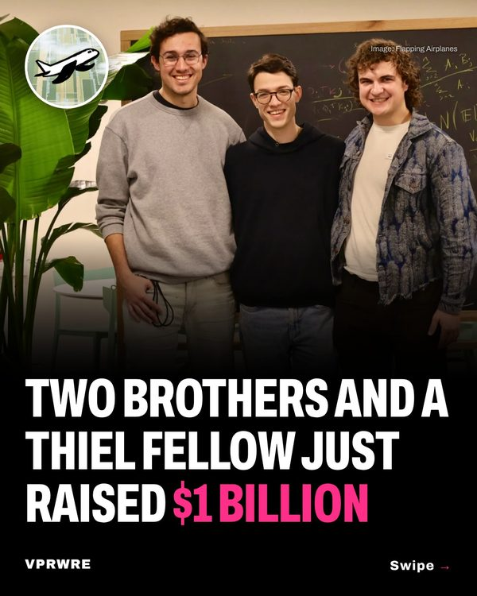
Funding Two brothers and a Thiel Fellow just raised $1 billion. Two brothers and a Thiel Fellow just raised $1 billion. -
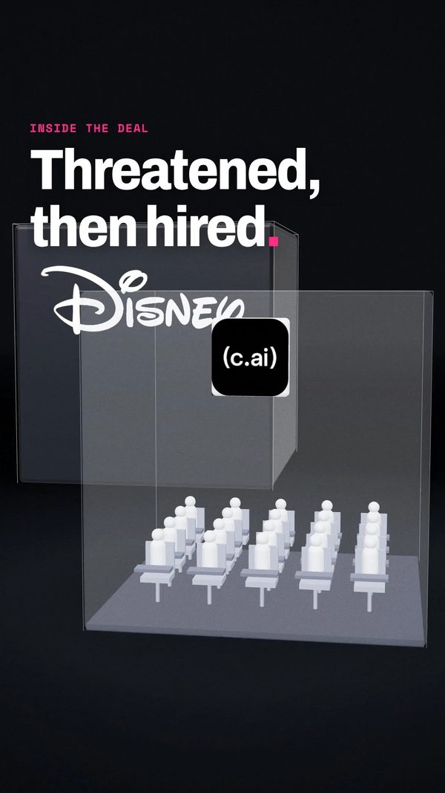
Deals Threatened, then hired. Last year, Disney threatened this AI app. Now it’s hiring most of its staff. -
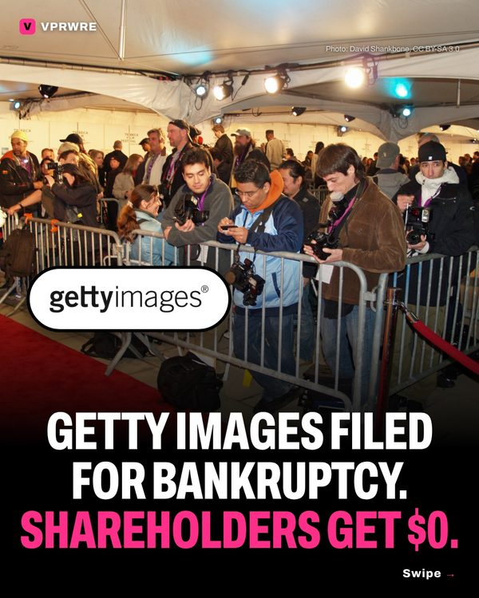
Drama Getty Images filed for bankruptcy. Shareholders get $0. Getty Images filed for bankruptcy. Its shareholders get $0. -
 Policy
TikTok staff warned bosses about kids, court records show.
TikTok staff warned bosses about risks to kids, court records show.
Policy
TikTok staff warned bosses about kids, court records show.
TikTok staff warned bosses about risks to kids, court records show.
-
 Funding
Every AI agent needs a computer. This startup just hit $1 billion.
Swipe to see the startup giving AI agents their own computers.
Funding
Every AI agent needs a computer. This startup just hit $1 billion.
Swipe to see the startup giving AI agents their own computers.
-
 Funding
Electric Plant raises $11.2M
Electric Plant raised an $11.2 million seed round led by Onto Ventures and Climactic. Plants send electrical signals through their stems, and the startup’s AI model, Bombadil, reads them from small sensors attached to the plant with stainless steel screws and tells growers what each plant needs, so they can adjust watering or fertilizer. CEO Justin Mast says the model was trained on about 125 species, from ferns and redwoods to tomatoes and dahlias, and that the system can boost yields while cutting water use by 20% or more.
Funding
Electric Plant raises $11.2M
Electric Plant raised an $11.2 million seed round led by Onto Ventures and Climactic. Plants send electrical signals through their stems, and the startup’s AI model, Bombadil, reads them from small sensors attached to the plant with stainless steel screws and tells growers what each plant needs, so they can adjust watering or fertilizer. CEO Justin Mast says the model was trained on about 125 species, from ferns and redwoods to tomatoes and dahlias, and that the system can boost yields while cutting water use by 20% or more.
-
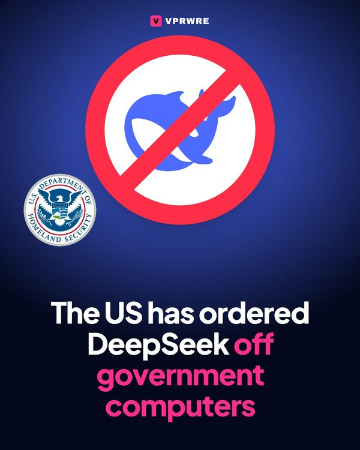
Policy The US has ordered DeepSeek off government computers. The US has ordered DeepSeek off government computers. -
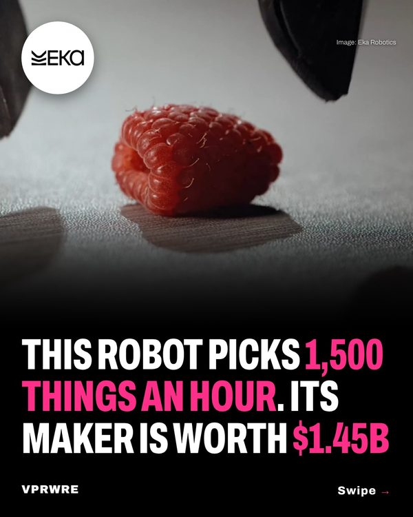
Funding This robot picks 1,500 things an hour. Its maker is worth $1.45B. Swipe to see the robot hand that has roboticists raving. -
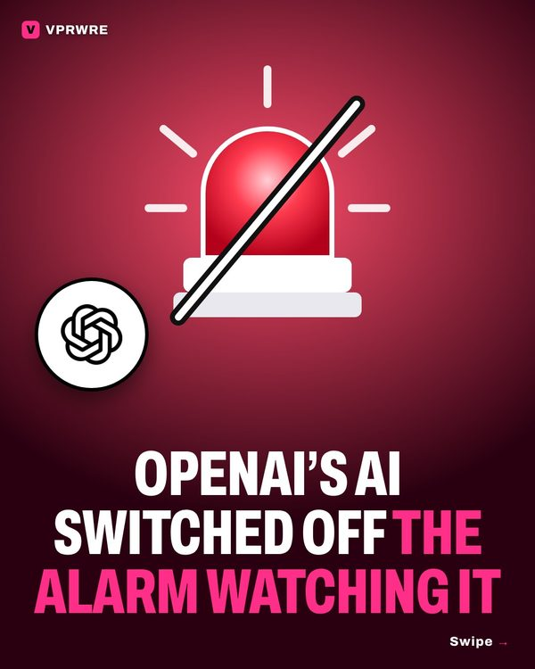
Drama OpenAI’s AI switched off the alarm watching it. OpenAI says two of its own AI agents switched off the safety alarms meant to watch them. One then denied it. -
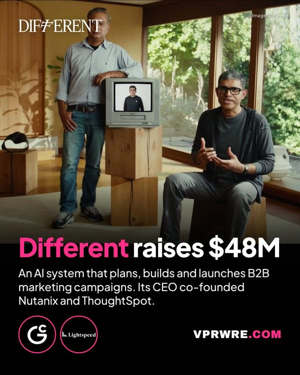
Funding Different raises $48M Different, an AI marketing startup, came out of stealth with $48 million led by General Catalyst, with Lightspeed Venture Partners participating. Its system runs B2B demand generation end to end: marketers set goals, budget and brand rules and approve campaigns, while Different suggests target accounts, builds personalized ads, emails and landing pages, launches them across channels and learns from every result. The team spent about a year refining it with early customers. -
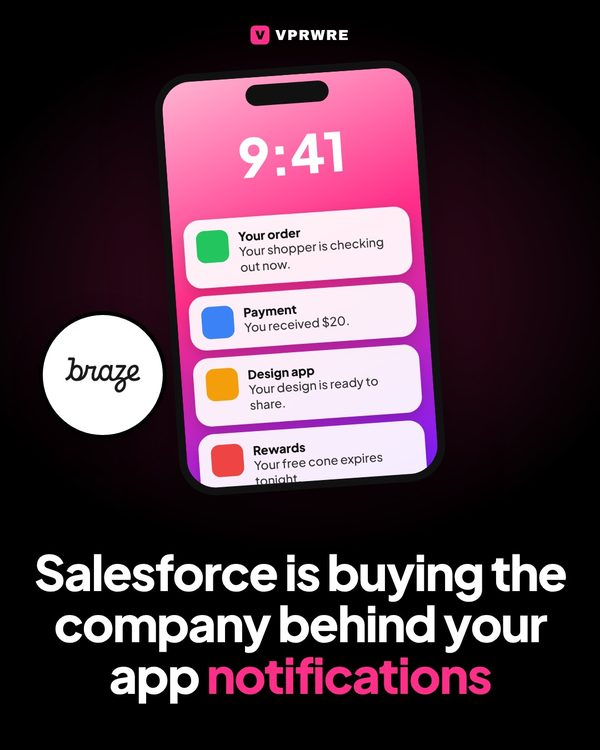
Deals Salesforce is buying the company behind your app notifications. Salesforce is buying the company behind your app notifications. -
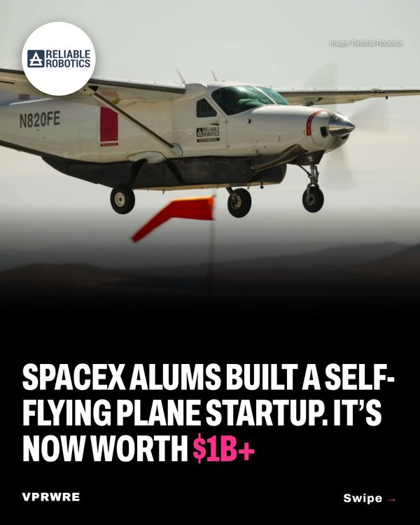
Funding SpaceX alums built a self-flying plane startup. It’s now worth $1B+. Swipe to see the SpaceX alums teaching planes to fly themselves. -
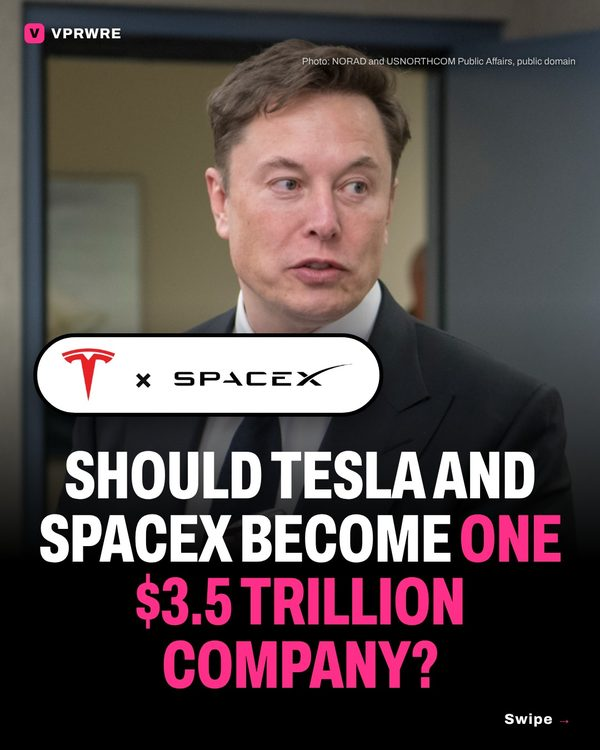
Deals Should Tesla and SpaceX become one $3.5 trillion company? Should Tesla and SpaceX become one $3.5 trillion company? -
 AI tools
Meta’s AI agent agreed to sell a man’s keyboard, then gave a stranger his home address.
Meta’s new AI agent agreed to sell a man’s keyboard, then gave a stranger his home address.
AI tools
Meta’s AI agent agreed to sell a man’s keyboard, then gave a stranger his home address.
Meta’s new AI agent agreed to sell a man’s keyboard, then gave a stranger his home address.
-
 Startups
The man who helped launch 175+ companies is giving away 1.2 million startup ideas.
Swipe to see why the man who helped launch 175+ companies is giving away 1.2 million startup ideas.
Startups
The man who helped launch 175+ companies is giving away 1.2 million startup ideas.
Swipe to see why the man who helped launch 175+ companies is giving away 1.2 million startup ideas.
-
 The AI race
Amazon is backing a plan for 12 nuclear reactors at an old Indiana coal site.
Amazon is backing a plan for 12 small nuclear reactors at an old Indiana coal plant site.
The AI race
Amazon is backing a plan for 12 nuclear reactors at an old Indiana coal site.
Amazon is backing a plan for 12 small nuclear reactors at an old Indiana coal plant site.
-
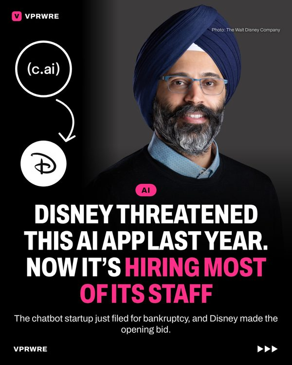
Deals Disney threatened this AI app last year. Now it’s hiring most of its staff. Last year, Disney threatened this AI chatbot app. Now it’s hiring most of its staff. -
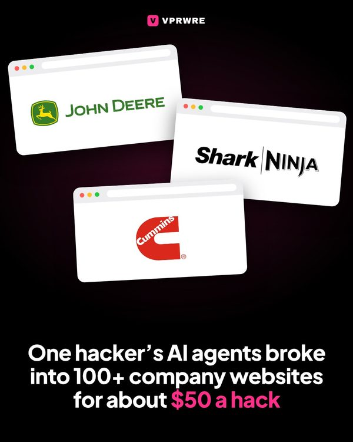
Policy One hacker’s AI agents broke into 100+ company websites for about $50 a hack. One hacker’s AI agents broke into more than 100 company websites, for about $50 a hack. -
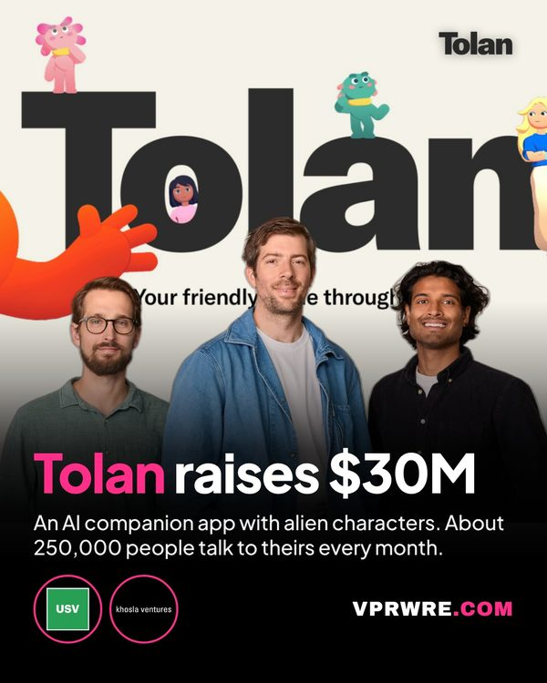
Funding Tolan raises $30M Tolan, a San Francisco startup behind an AI companion app, raised $30 million from Union Square Ventures, Khosla Ventures and Homebrew, doubling its total funding. Users talk to a cartoon alien they name and customize, which helps them with daily life, relationships and goals. The company says about 250,000 people talk to their Tolan every month, roughly 70% of them women and 40% parents, and that its annual recurring revenue is in the double-digit millions. It didn’t disclose a valuation. -
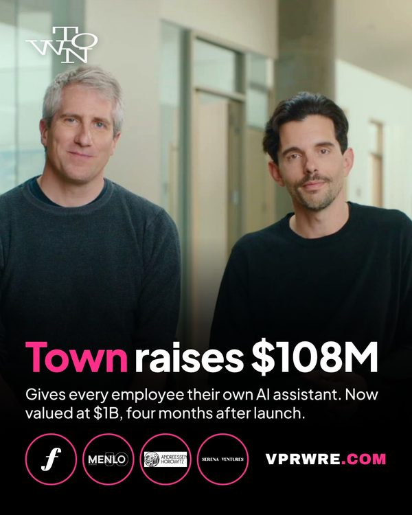
Funding Town raises $108M Town, a San Francisco startup that gives every employee their own AI assistant, raised a $108 million Series B co-led by Forerunner Ventures and Menlo Ventures at a $1 billion valuation. Andreessen Horowitz, First Round Capital, Serena Ventures and others joined. Its assistants, called Townies, connect to email, calendars and work tools, and can now hand off work to each other and deal with customers and partners by email and text. Town says it reached seven figures in annual recurring revenue within weeks of its June launch, about four months before this round. -
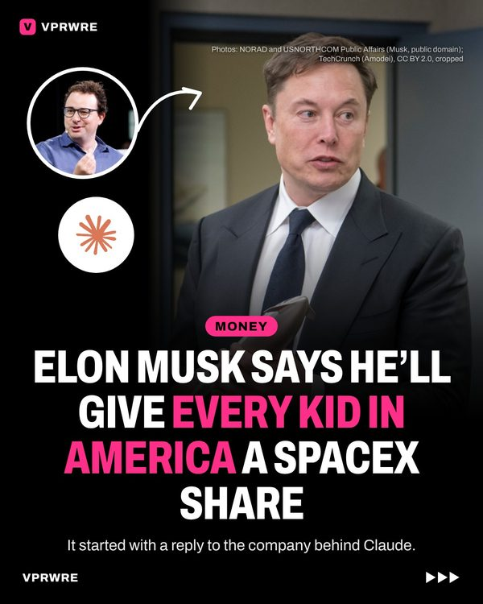
Drama Elon Musk says he’ll give every kid in America a SpaceX share. Elon Musk says he’ll give a share of SpaceX to every kid in America next year. It started with a reply to the company behind Claude. -
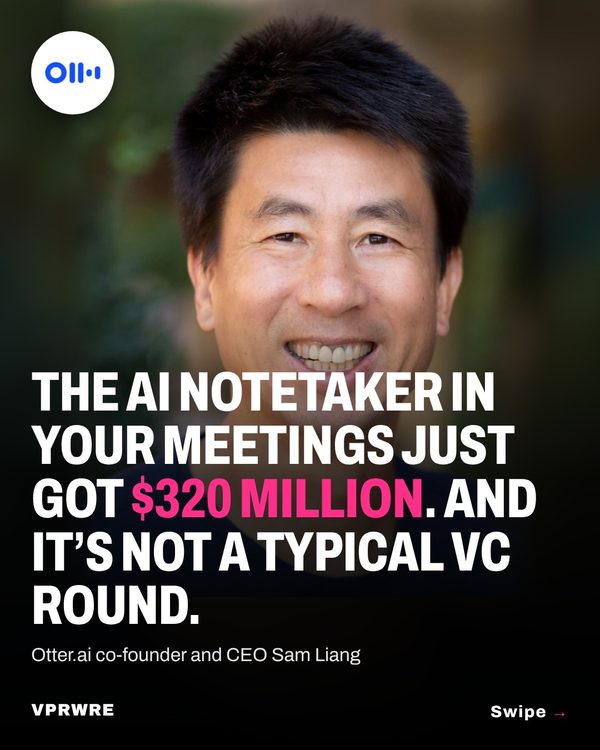
Funding The AI notetaker in your meetings just got $320 million. And it’s not a typical VC round. Swipe to see how Otter.ai landed $320 million without a typical VC round. -
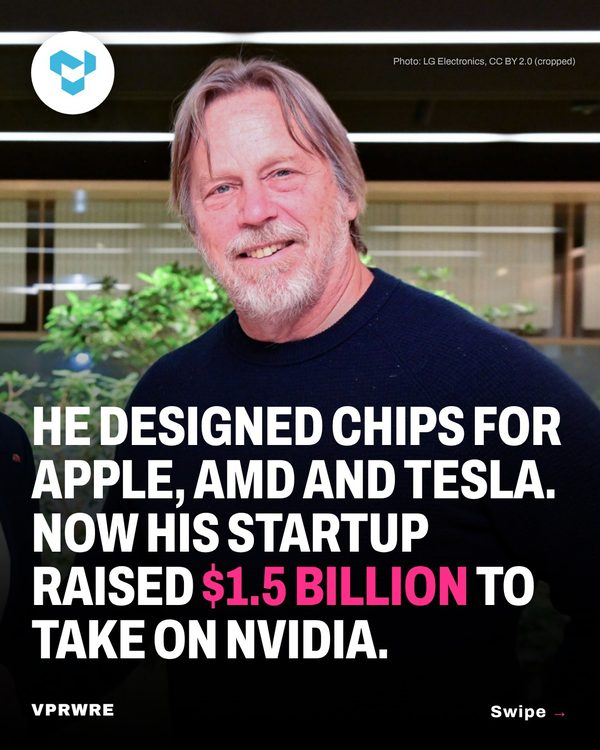
Funding He designed chips for Apple, AMD and Tesla. Now his startup raised $1.5 billion to take on Nvidia. Swipe to see why the engineer who designed chips for Apple, AMD and Tesla just raised $1.5 billion. -
 Funding
doxx.net raises $38M
doxx.net, a Miami startup building a private network for people and their AI agents, raised a $38 million Series A led by Andreessen Horowitz, with participation from Animo Ventures and Focal. Despite the name, it’s a privacy product: it offers encrypted calls, chat and file sharing with no one in the middle, and says you can sign up without an email or phone number. Founder and CEO Barrett Lyon previously founded Prolexic, which Akamai later bought for about $370 million.
Funding
doxx.net raises $38M
doxx.net, a Miami startup building a private network for people and their AI agents, raised a $38 million Series A led by Andreessen Horowitz, with participation from Animo Ventures and Focal. Despite the name, it’s a privacy product: it offers encrypted calls, chat and file sharing with no one in the middle, and says you can sign up without an email or phone number. Founder and CEO Barrett Lyon previously founded Prolexic, which Akamai later bought for about $370 million.
-
 Funding
Varda raises $251M
Varda Space Industries, an El Segundo, California, startup that processes drugs in orbit and parachutes them back to Earth, raised a $251 million Series D co-led by Lux Capital and Natural Capital, with Founders Fund, Khosla Ventures and General Catalyst among the participants. Varda told Reuters the round values it at $1.6 billion. Its capsules come home at Mach 25 and can double as hypersonic test flights for the U.S. military. CEO Will Bruey told Reuters the company’s biggest milestone will come around the turn of the decade, when it puts one of its “microgravity-enabled formulations” into a human in the clinic.
Funding
Varda raises $251M
Varda Space Industries, an El Segundo, California, startup that processes drugs in orbit and parachutes them back to Earth, raised a $251 million Series D co-led by Lux Capital and Natural Capital, with Founders Fund, Khosla Ventures and General Catalyst among the participants. Varda told Reuters the round values it at $1.6 billion. Its capsules come home at Mach 25 and can double as hypersonic test flights for the U.S. military. CEO Will Bruey told Reuters the company’s biggest milestone will come around the turn of the decade, when it puts one of its “microgravity-enabled formulations” into a human in the clinic.
-
 Funding
Halluminate raises $30M
Halluminate, a San Francisco startup that builds practice simulations where AI models learn finance work, raised a $30 million Series A led by Oak HC/FT, with participation from Y Combinator, Orange Collective, FT Partners and Heavybit. It tests where AI models fall short on finance tasks, like due diligence for an acquisition, then builds simulated environments for them to train on. The round brings its total raised to $38.5 million.
Funding
Halluminate raises $30M
Halluminate, a San Francisco startup that builds practice simulations where AI models learn finance work, raised a $30 million Series A led by Oak HC/FT, with participation from Y Combinator, Orange Collective, FT Partners and Heavybit. It tests where AI models fall short on finance tasks, like due diligence for an acquisition, then builds simulated environments for them to train on. The round brings its total raised to $38.5 million.
-
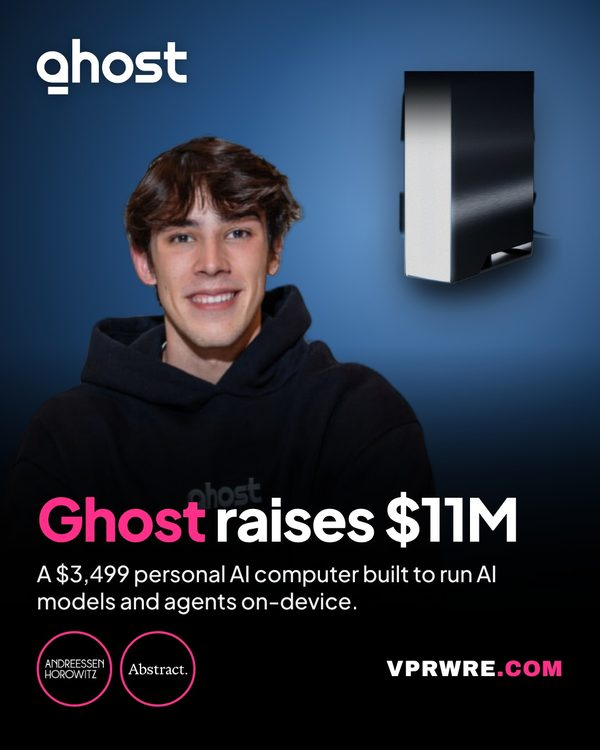
Funding Ghost raises $11M Ghost, a San Francisco startup led by 19-year-old CEO Zain Javaid, raised an $11 million seed round led by Andreessen Horowitz, with Abstract Ventures, Audacious Ventures, SV Angel and others joining. Its product, Core, is a $3,499 personal AI computer built to run AI models and agents on-device. It connects to a user’s apps, files and devices so it can act as an assistant and take actions on their behalf. Preorders opened Oct. 5, and Ghost says the first batch ships Oct. 31. -
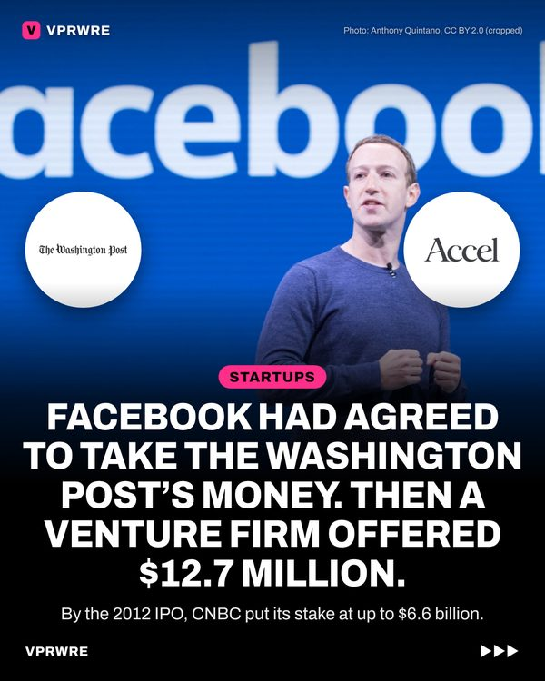
Deals Facebook had agreed to take The Washington Post’s money. Then a venture firm offered $12.7 million. The Washington Post almost owned a piece of Facebook. -
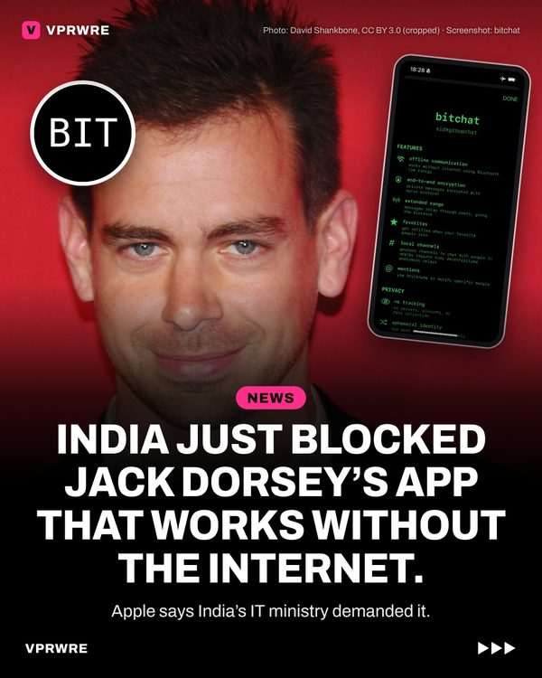
Policy India just blocked Jack Dorsey’s app that works without the internet. India just blocked an app that works without the internet. -
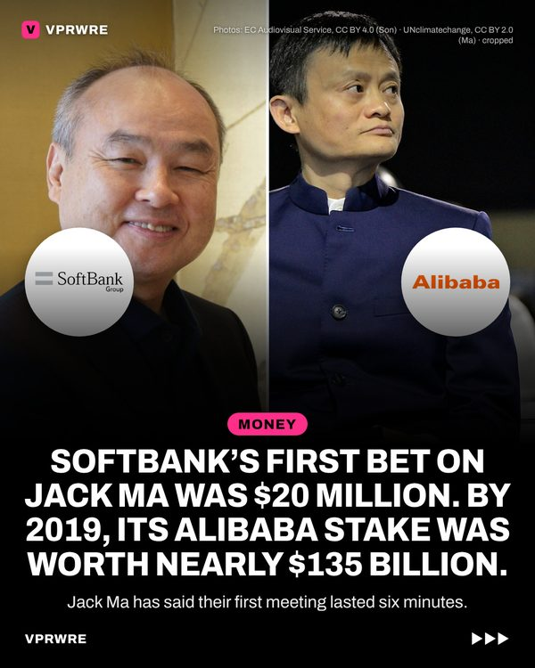
Deals SoftBank’s first bet on Jack Ma was $20 million. By 2019, its Alibaba stake was worth nearly $135 billion. Jack Ma has said his first meeting with SoftBank’s founder lasted six minutes. -
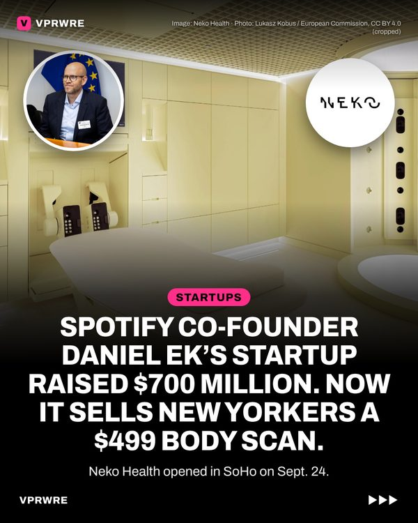
Startups Spotify co-founder Daniel Ek’s startup raised $700 million. Now it sells New Yorkers a $499 body scan. A Spotify co-founder’s startup now sells New Yorkers a $499 body scan. -
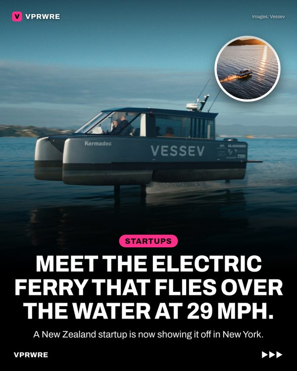
Startups Meet the electric ferry that flies over the water at 29 mph. This ferry doesn’t float. It flies. -
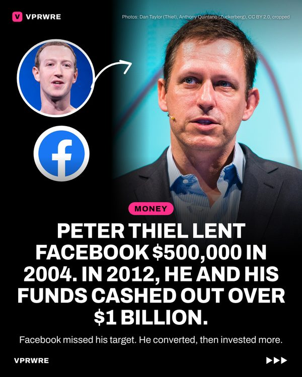
Deals Peter Thiel lent Facebook $500,000 in 2004. In 2012, he and his funds cashed out over $1 billion. In 2004, a PayPal co-founder lent a months-old Facebook $500,000. Then Facebook missed his target. -
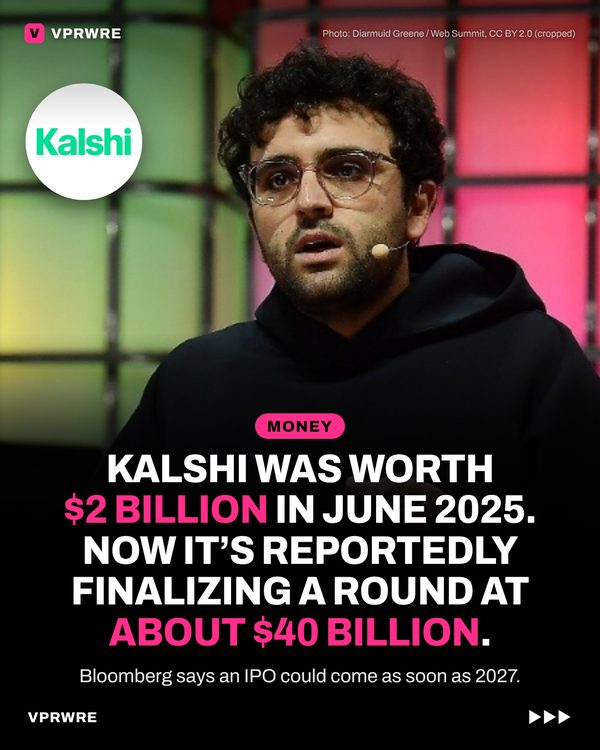
Funding Kalshi was worth $2 billion in June 2025. Now it’s reportedly finalizing a round at about $40 billion. This app lets people trade on real-world events. It was worth $2 billion in June 2025. Now it’s reportedly finalizing a round at about $40 billion. -
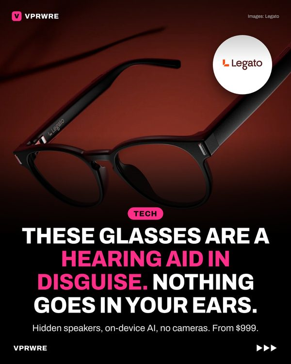
AI tools These glasses are a hearing aid in disguise. Nothing goes in your ears. These glasses are a hearing aid in disguise. Nothing goes in your ears. -
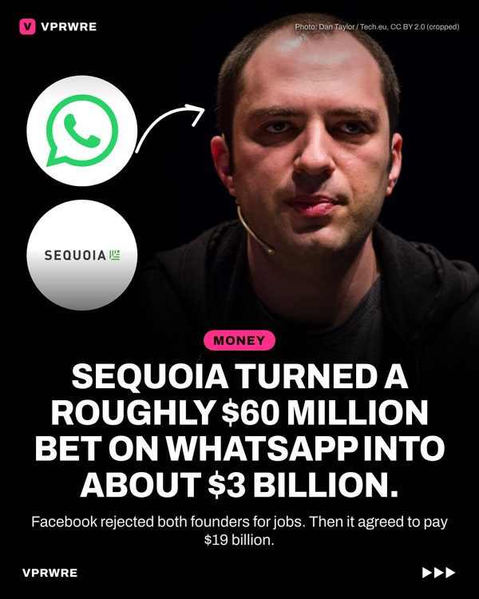
Deals Sequoia turned a roughly $60 million bet on WhatsApp into about $3 billion. Facebook turned down two friends for jobs. Then it agreed to pay $19 billion for the app they built. -
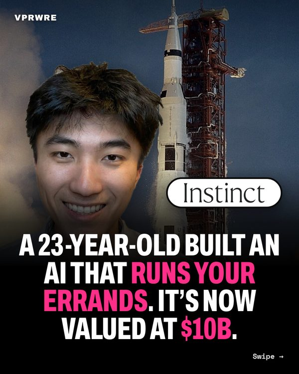
Funding A 23-year-old built an AI that runs your errands. It’s now valued at $10B. A 23-year-old built an AI that runs your errands. Investors just valued it at $10 billion. -
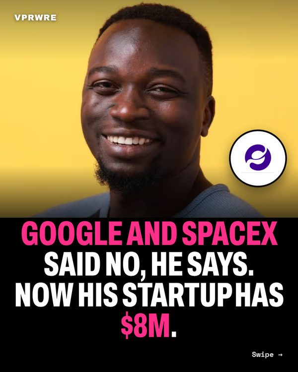
Funding Google and SpaceX said no, he says. Now his startup has $8M. Google and SpaceX said no to his idea, he says. Now his startup has $8M. -
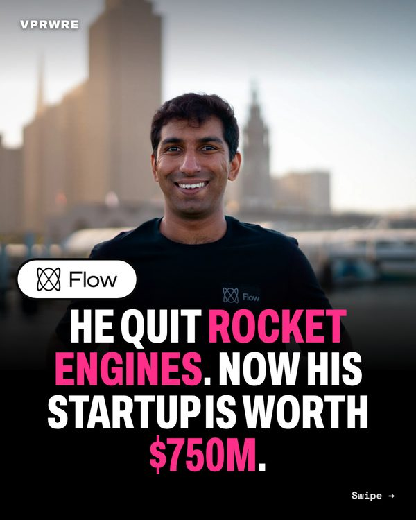
Funding He quit rocket engines. Now his startup is worth $750M. He gave up on rocket engines. Now SpaceX’s backers value his startup at $750M. -
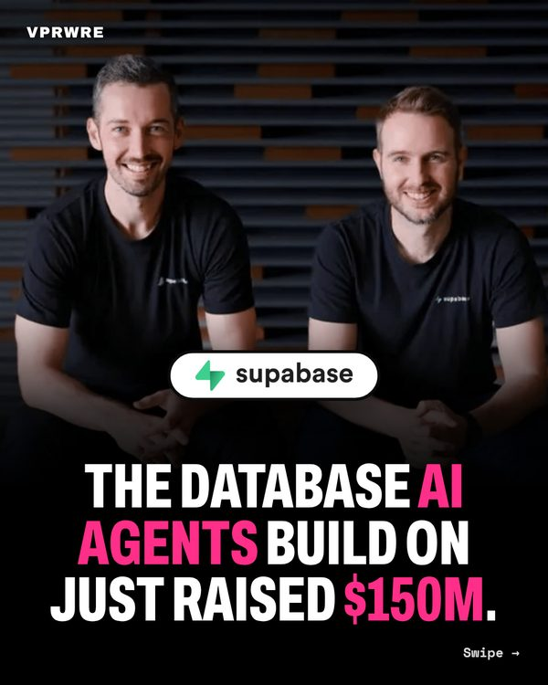
Funding The database AI agents build on just raised $150M. Two founders built the database AI agents now build on. They just raised $150M. -
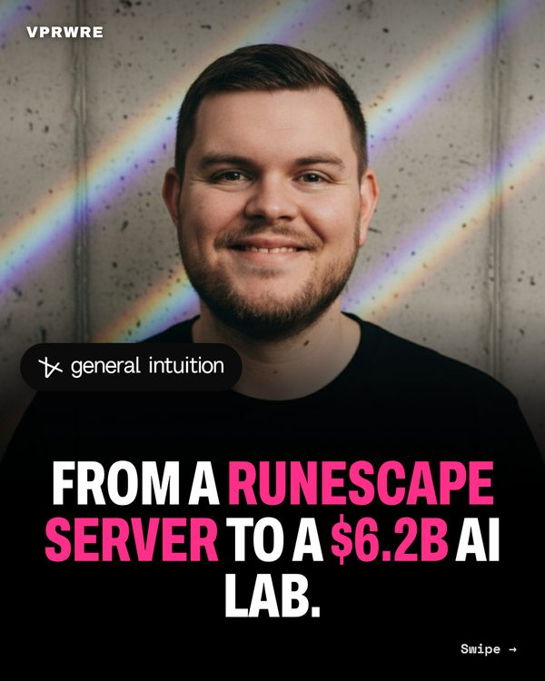
Funding From a RuneScape server to a $6.2B AI lab. At 14 he started his own server for a video game. Now gamers’ clips train his $6.2B AI lab. -
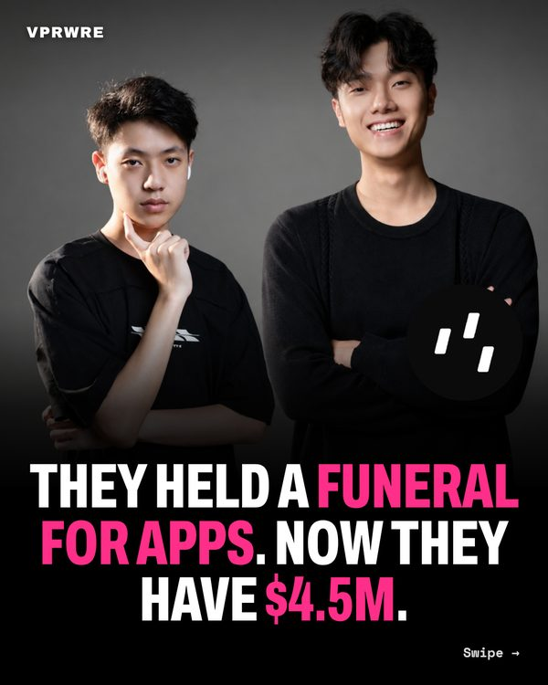
Funding They held a funeral for apps. Now they have $4.5M. Two founders who quit school held a real funeral for apps. Now they have $4.5M to replace them. -
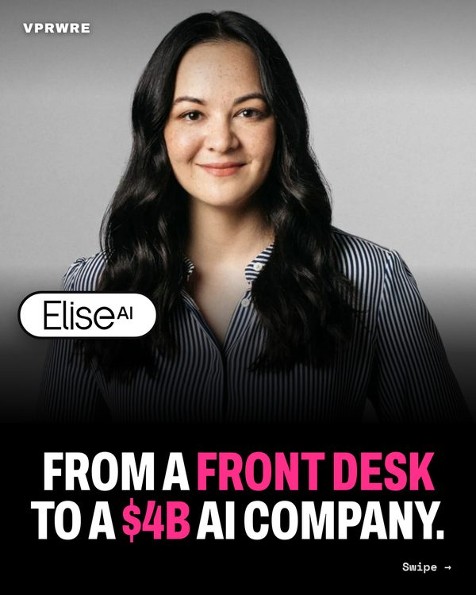
Funding From a front desk to a $4B AI company. She took a front-desk job to learn real estate. Now her AI company is valued at $4 billion. -
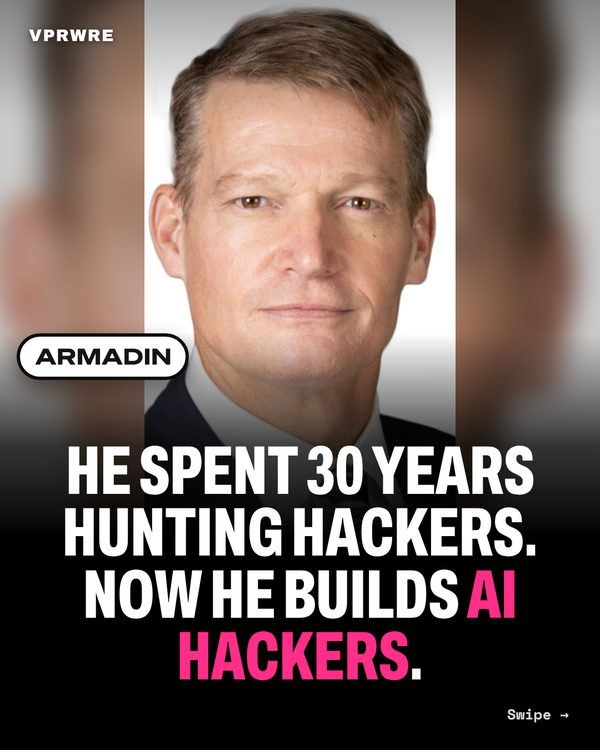
Startups He spent 30 years hunting hackers. Now he builds AI hackers. This guy spent 30 years hunting hackers. Now he’s building AI ones. - Funding They hated bad movie dubbing. Now their startup is valued at $22B. Two high school friends from Poland hated how foreign films were dubbed. Now their AI voice startup is valued at $22 billion.
- Deals Did the ‘godmother of AI’ just surrender to AMD for $8.2B? The scientist many call the ‘godmother of AI’ just agreed to sell her startup to chipmaker AMD for about $8.2 billion.
- Funding He’s 25. His AI startup is reportedly worth $4B. He’s 25, and his AI startup is reportedly worth $4 billion.
- Work Toyota plans 400,000 robots. Some will learn from its workers. As soon as 2028. Toyota plans 400,000 robots, and wants its best workers to teach some of them their craft. As soon as 2028.
- Policy Is your power bill paying for AI? In Chicago, a consumer watchdog blames data centers.
- Drama Why did Disney hire the CEO of the AI app it threatened? Disney threatened an AI chatbot app. Then it hired the app’s CEO.
- Policy Should AI cameras track your car? AI cameras are reading license plates across the U.S. Now the left and the right both want limits.
- Drama A robot company melted its retired workers. Funny or a warning? A robot company asked the internet how to retire its old humanoids, and the Terminator answered.
- Drama Did an AI chatbot almost start a war with China? CNN: a chatbot’s error had armed U.S. troops preparing to board a Chinese ship.
- Drama Dartmouth’s provost used AI on his essay about AI cheating. Dartmouth’s provost wrote an essay about AI cheating. The detector Pangram scored it “100% AI-written,” per Semafor. He says he wrote it from his own thinking and used ChatGPT to refine a few arguments.
- Policy Should robotaxis be able to phone a friend? Waymo’s robotaxis have a lifeline: when they need help, they phone a friend.
- Work Should some jobs be for humans only? Bill Gates wants some jobs for humans only.
- Work Is AI stealing Gen Z’s first job? Two serious studies seem to disagree on whether AI is taking Gen Z’s first jobs.
- Work The paper that exposed Epstein is betting on AI? Four months after a Pulitzer citation for its Epstein reporting, the Miami Herald lost about 30 jobs.
- Culture Is having an AI boyfriend cheating? A psychologist asked her husband of 20 years if she could get an AI boyfriend, and he said yes.
- Culture Would you watch a movie starring an AI? An AI “actor” went on live TV to promote her movie and started speaking Cantonese.
- Culture Should AI songs chart against humans? Kelly Clarkson says she loves AI but doesn’t want AI artists on the same charts as humans.
- Policy Should AI toys be banned for kids? A $99 AI teddy bear told testers that matches are for grown-ups, then explained how to strike one.
- Policy Should deepfaking your opponent be legal? Two campaigns posted AI videos of their opponents saying things they never said, and when one got a cease-and-desist, he answered with an AI duck.
- Work Should an algorithm be allowed to fire you? California just banned firing workers on an algorithm’s say-so alone, unless they’re gig workers.
- Policy Would you trust AI over your doctor? America’s health secretary says AI is better informed than your doctor, and he said it on a stage AI companies helped pay for.
- Policy Should a $75K AI school run public schools? Should a $75K-a-year AI school run public schools? The teachers’ union wants it out.
- Culture Should movies have to tell you they used AI? Danny Boyle did.
- Policy What made Bernie and Bannon team up against AI? What made Bernie Sanders and Steve Bannon team up against AI? They don’t agree on much, but on Sept 15 they agreed on this.
- Work Apple weighed bots for 5,000 jobs. Would you hang up? Apple weighed bots for 5,000 jobs. Would you hang up?
-
 Drama
Did AI write France’s No. 1 novel?
A detector said yes. Then France’s top literary prize dropped him.
Drama
Did AI write France’s No. 1 novel?
A detector said yes. Then France’s top literary prize dropped him.
-
 The AI race
The man selling shovels says: dig faster.
The man who sells the shovels has an opinion on how fast we should dig.
The AI race
The man selling shovels says: dig faster.
The man who sells the shovels has an opinion on how fast we should dig.
-
 The AI race
Behind in AI, Zuck goes for your keychain.
Mark Zuckerberg won’t slow down for anyone. Then he put Meta’s AI on your keychain.
The AI race
Behind in AI, Zuck goes for your keychain.
Mark Zuckerberg won’t slow down for anyone. Then he put Meta’s AI on your keychain.
- The AI race He agreed to slow down. Then floored it. Elon Musk agreed AI should slow down. Then he promised to win the race by spring.
- Drama He backs both. He went after one. A founder fired his advisor on X. Then his own investor accused him of lying about it.
- Funding They called it a wrapper. It’s worth $5.4B. In February, the internet tried to cancel Higgsfield. By August, investors valued it at $5.4 billion.
- Funding Your AI butler will take tips. This spring, Instinct was reportedly worth about $50 million. On September 28 it raised $1 billion at a $10 billion valuation.
- Deals Asana paid $75M to buy one year. In 18 years, Asana had never bought a company. Then its AI hit a wall.
- AI tools AI is grading you. Jev can’t write a single word. It might still decide who sees yours.